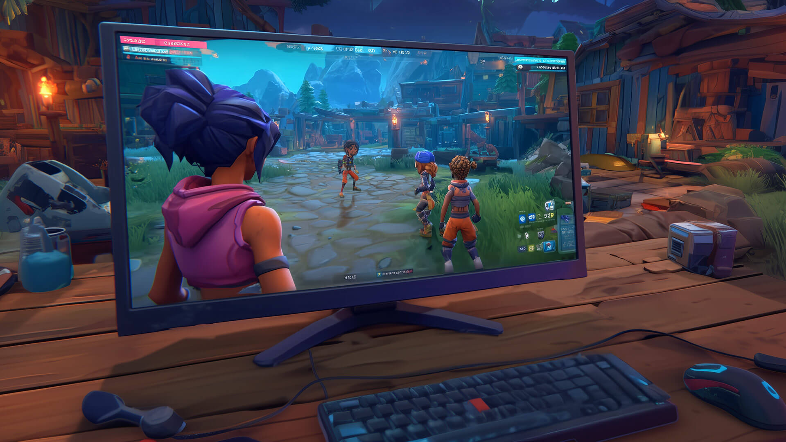
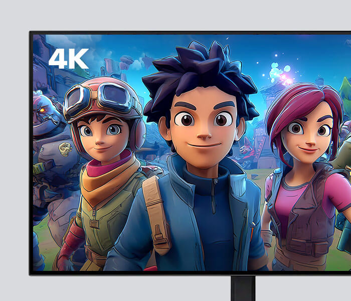
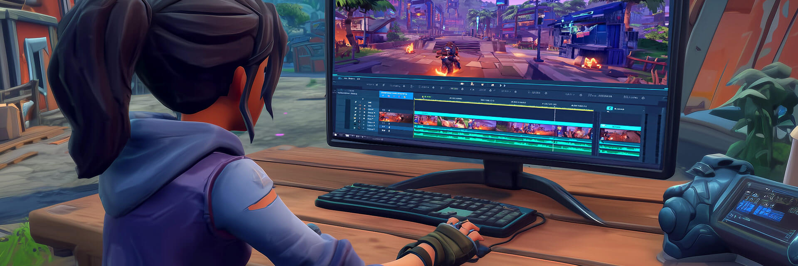
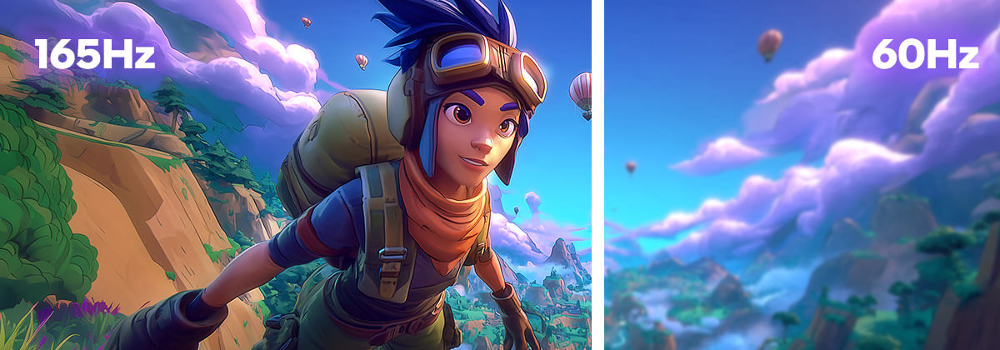

PC Monitor Display Basics
PC monitors are an essential part of any computer setup, allowing users to see and interact with their work. When breaking down the parts of a PC, CPUs execute instructions, process data, and tell other components what to do.
The GPU takes that processed data and creates the actual images and frames that make up what you see. PC monitors don't create visuals, they simply display the images that the GPU outputs so users can view and interact with them.
In this training, we’ll break down the main attributes of PC monitors, highlight the specs that matter most, and explain how workloads are impacted by each aspect!
PC Monitor Attributes
Understanding key specs like screen size, resolution, refresh rate, response time, and panel technology can help users choose the right monitor for work, gaming, or entertainment.
Screen Size
PC monitors come in various sizes, with large screens providing more space to work or watch entertainment, and smaller screens being more compact and easier to fit on a desk.
Screen size refers to the measurement of a monitor's viewable area, from one corner to another, measured diagonally in inches. Typical monitor sizes fall between 19″ and 32″, with 24″ and 27″ being two of the top choices for everyday users.

Resolution
A PC monitor’s resolution is the number of pixels, which, when displayed on screen, make up images. Pixelation is written as width x height, with 1920 x 1080 (Full HD) or 3840 x 2160 (4K) being two common examples of screen resolutions. If you multiply the numbers in a resolution, you get the total number of pixels on the screen. A 3840 × 2160 (4K) screen would have 8,294,400 pixels and provide a higher resolution, meaning it creates a much sharper and more detailed image.
Higher resolution PC monitors are best for:
Productivity Work:
More pixels let you see multiple windows clearly.
Creative Work:
Higher resolution shows finer details in photos and videos.
Entertainment:
4K resolution delivers sharper, more lifelike videos.
Although high resolutions are better, they rely on stronger CPU and GPU performance, which can increase power usage and negatively impact PC responsiveness. A majority of customers with everyday workloads, such as sending emails and attending virtual calls, can easily use a basic 1080p monitor.

Response Time
Typically measured in milliseconds (ms), a PC monitor’s response time refers to how quickly the monitor’s pixels change color. A lower number means it has a faster response time, with 1 ms being a great time for users needing smooth, seamless visuals for their tasks.
For gamers, a fast response time of 1ms is ideal because it minimizes motion blurring and ghosting, making fast-paced action look clearer. To accomplish everyday tasks like web browsing, sending emails, and watching videos, a 5ms response time is more than enough.
Refresh Rate
A PC monitor's refresh rate refers to how many times per second a monitor can update the image it’s displaying. Standard monitors come with a 60 Hz refresh rate, with better options ranging from 144Hz, 165Hz, or even 240Hz+.
While most everyday users can rely on a 60Hz monitor for basic tasks, other customers may need a higher refresh rate for more demanding workloads.
A higher refresh rate of 144Hz+ is ideal for:
Gaming:
Higher refresh rates make fast-paced games feel smoother and more responsive.
Content Creation:
Faster refresh rates improve responsiveness when editing videos or working with animated content.
Entertainment:
Higher refresh rates improve the clarity of sports and action scenes during movies and streaming.

Panel Technology
PC monitor panel technology refers to the type of screen inside the monitor. The type of screen affects how colors look, how bright or dark a screen can get, and how easily users can see images from different angles.
The main types of panels are:
- IPS: These panels are some of the best at displaying colors and enabling wide viewing angles. They're ideal for work like editing photos or videos.
- VA: These panels offer strong contrast ratios, making darks darker and whites brighter, and provide good viewing angles. They're a great all-around option and are usually more affordable.
- TN: These panels are super responsive, but their colors and viewing angles aren't as good comparatively. However, they're offered at a lower cost, and with fast response times, they can be a great choice for gamers.
Though they’re not as common, OLED monitors are available and offer deep blacks, vibrant colors, and excellent picture quality for movies, games, and creative work.
Summary
PC monitors are essential for displaying the images and visuals that a CPU and GPU produce, letting users see and interact with their work. Key features like screen size, resolution, response time, refresh rate, and panel type affect how clear, smooth, and accurate displays look.
Higher resolutions and faster refresh rates benefit productivity, creative work, gaming, and entertainment. Panel technology, including IPS, VA, TN, and OLED, determines color quality, contrast, and viewing angles.
When recommending a PC monitor, make sure to ask customers questions about their workloads, like gaming, editing, or everyday tasks, to suggest the right one.
Materials are Intel Confidential. For Retail Sales Professional training only. Do not repurpose or reuse without permission.
No product or component can be absolutely secure.
Your costs and results may vary.
Intel technologies may require enabled hardware, software, or service activation.
© Intel Corporation. Intel, the Intel logo, and other Intel marks are trademarks of Intel Corporation or its subsidiaries. Other names and brands may be claimed as the property of others.